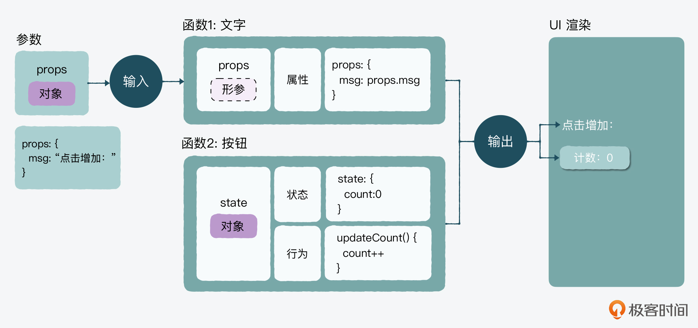
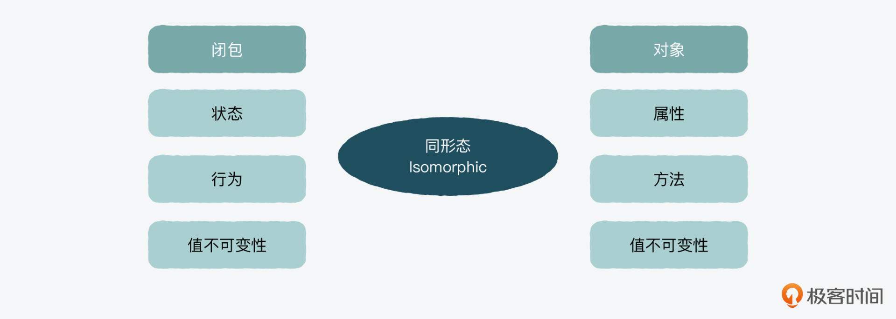
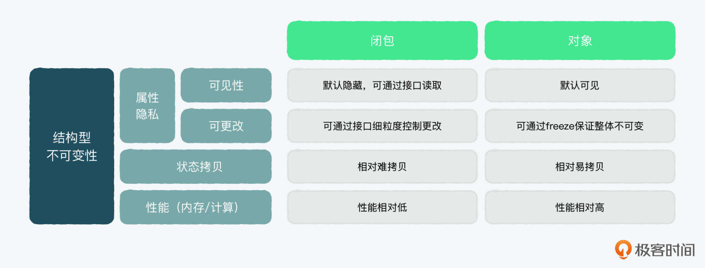
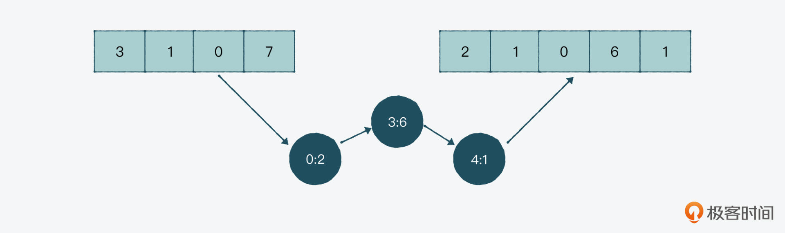

- 00 开篇词 JavaScript的进阶之路.md.html
- 01 函数式vs.面向对象：响应未知和不确定.md.html
- 02 如何通过闭包对象管理程序中状态的变化？.md.html
- 03 如何通过部分应用和柯里化让函数具象化？.md.html
- 04 如何通过组合、管道和reducer让函数抽象化？.md.html
- 05 map、reduce和monad如何围绕值进行操作？.md.html
- 06 如何通过模块化、异步和观察做到动态加载？.md.html
- 07 深入理解对象的私有和静态属性.md.html
- 08 深入理解继承、Delegation和组合.md.html
- 09 面向对象：通过词法作用域和调用点理解this绑定.md.html
- 10 JS有哪8种数据类型，你需要注意什么？.md.html
- 11 通过JS引擎的堆栈了解闭包原理.md.html
- 12 JS语义分析该用迭代还是递归？.md.html
- 13 JS引擎如何实现数组的稳定排序？.md.html
- 14 通过SparkPlug深入了解调用栈.md.html
- 15 如何通过哈希查找JS对象内存地址？.md.html
- 16 为什么环形队列适合做Node数据流缓存？.md.html
- 17 如何通过链表做LRU_LFU缓存？.md.html
- 18 TurboFan如何用图做JS编译优化？.md.html
- 19 通过树和图看如何在无序中找到路径和秩序.md.html
- 20 算法思想：JS中分治、贪心、回溯和动态规划.md.html
- 21 创建型：为什么说Redux可以替代单例状态管理.md.html
- 22 结构型：Vue.js如何通过代理实现响应式编程.md.html
- 23 结构型：通过jQuery看结构型模式.md.html
- 24 行为型：通过观察者、迭代器模式看JS异步回调.md.html
- 25 行为型：模版、策略和状态模式有什么区别？.md.html
- 26 特殊型：前端有哪些处理加载和渲染的特殊“模式”？.md.html
- 27 性能：如何理解JavaScript中的并行、并发？（上）.md.html
- 28 性能：如何理解JavaScript中的并行、并发？（下）.md.html
- 29 性能：通过Orinoco、Jank Busters看垃圾回收.md.html
- 30 网络：从HTTP_1到HTTP_3，你都需要了解什么？.md.html
- 31 安全：JS代码和程序都需要注意哪些安全问题？.md.html
- 32 测试（一）：开发到重构中的测试.md.html
- 33 测试（二）：功能性测试.md.html
- 34 测试（三）：非功能性测试.md.html
- 35 静态类型检查：ESLint语法规则和代码风格的检查.md.html
- 36 Flow：通过Flow类看JS的类型检查.md.html
- 37 包管理和分发：通过NPM做包的管理和分发.md.html
- 38 编译和打包：通过Webpack、Babel做编译和打包.md.html
- 39 语法扩展：通过JSX来做语法扩展.md.html
- 40 Polyfill：通过Polyfill让浏览器提供原生支持.md.html
- 41 微前端：从MVC贫血模式到DDD充血模式.md.html
- 42 大前端：通过一云多端搭建跨PC_移动的平台应用.md.html
- 43 元编程：通过Proxies和Reflect赋能元编程.md.html
- 结束语 JavaScript的未来之路：源于一个以终为始的初心.md.html
- 捐赠
02 如何通过闭包对象管理程序中状态的变化？
你好，我是石川。
通过上节课的学习，现在我们知道，函数式编程中存在副作用（side effect），而纯函数和不可变就是减少副作用的两个核心思想。那么按理说，我们要想把副作用降低到接近为零，就可以用纯函数，同时不接受任何参数。但是这样完全自我封闭的函数，也就几乎没有什么使用意义了。
所以，作为一个函数，还是要有输入、计算和输出，才能和外界有互动往来，我们的系统也才能“活”起来。而一个活的系统，它的状态肯定是在不停变化的，那么我们如何才能在不可变的原则下，来管理这种变化呢？
今天这节课，我们就一起来看看在函数式编程中，有哪些值是可变的、哪些不可变，以及如何能在状态更新的同时做到不可变。
值的（不）可变
首先，我们要搞清楚一个问题，值到底是不是可变的？在JavaScript中，值一般被分为两种：原始类型和对象类型。
先来看原始类型。像字符串或数字这种数据类型，都是属于原始类型，而它们本身是不可变的。举个例子：在console.log中输入2 = 2.5，得到的结果会是invalid，这就证明了我们不可能改变一个原始类型的值。
2 = 2.5 // invalid
然后是对象类型。在JavaScript中，像数组、对象这类数据类型就叫做对象类型，这类数据更像是一种数据结构或容器。那这样的“值”是否可变？其实通过上节课数组的例子，你能看到这类值是可变的，比如通过splice这种方法。
所以下面，我们就来看看在使用对象类型的值来存储状态的时候，要如何在更新状态的同时做到不可变。
React.js中的props和state
这里，我们就以React.js为例，来观察下它是用什么类型的值作为状态的。
说到状态，React中有两个很重要的概念经常容易被混淆，分别是props和state。props通常是作为一个外部参数传入到函数里，然后作为静态元素输出在UI中渲染；state则是一个内部变量，它会作为动态元素输出在UI中渲染，并根据行为更新状态。

在上面这个图例中，有一个静态的文案和一个动态的计数器。其中，props就是“点击增加：”这个文案，它在页面上基本是不应该有什么变化的，就是一句固定的提示语，所以它就是props，一个静态的“属性”。
而在计数按钮中，它的值是基于每次点击加一的，也就是基于点击动态变化的，所以我们说它就是state，一个动态“状态”。
// 属性 props
class Instruction extends React.Component {
render() {
return <span>提示 - {this.props.message}</span>;
}
}
const element = <Instruction message="点击以下按钮增加：" />;
// 状态 state
class Button extends React.Component {
constructor() {
super();
this.state = {
count: 0,
};
}
updateCount() {}
render() {
return (<button onClick={() => this.updateCount()}> 点击了 {this.state.count} 次</button>);
}
}
那么回到刚才的问题，在React.js里，props和state是什么类型的值呢？答案是对象，props和state都是用对象来储存状态的。
可是，React为什么用对象做属性和状态存储值类型呢？它还有没有其它选择呢？下面我们就来看看。
结构型值的不可变
我们先来思考一个问题：props和state是不是必须的？
答案是，props是必须的，而state不是。因为假设我们的页面是一个静态页面，那么我们渲染内容就好了，但这种纯静态的应用也完全无法和用户互动。
所以在前端，纯静态的应用被叫做dumb as f*ck。当然这是一个不太文明的词，不过话糙理不糙，而且它的意思也很明显，就是说这样的应用也太“笨”了。
我们的应用肯定需要和用户交互，而一旦有交互，我们就需要管理值的状态（state） 和围绕值设计一系列行为（behavior）。在这个过程中，我们需要考虑的就是一个值的结构性不可变的问题。
所以接下来，我们就一起看看围绕值的结构性操作，都有哪些数据类型可以选择。
闭包和对象
首先是闭包（closure）和对象（object），这二者都可以对一个状态值进行封装和创建行为。
闭包最大的特点是可以突破生命周期和作用域的限制，也就是时间和空间的控制。
这里的突破生命周期的限制是指，当一个外部函数内嵌一个内部函数时，如果内嵌函数引用了外部函数的变量，这个变量就会突破生命周期的限制，在函数结束执行后，仍然存在。比如在下面闭包的例子中，我们创建了一个计数器，每次加1，可以记住上一次的值。
而突破作用域的限制是指，我们可以把一个内部函数返回成一个方法在外部调用。比如以下代码中，counter返回的counting方法，我们可以通过counter1来执行这个方法，从而就突破了counter作用域的限制。
function counter() {
let name = "计数";
let curVal = 0;
function counting() {
curVal++;
}
function getCount() {
console.log(
`${name}是${curVal}`
);
}
return {counting,getCount}
}
var counter1 = counter();
counter1.counting();
counter1.counting();
counter1.counting();
counter1.getCount(); // 计数是3
同样地，我们也可以通过对象来封装一个状态，并且创建一个方法来作用于这个状态值。
var counter = {
name: "计数",
curVal: 0,
counting() {
this.curVal++;
console.log(
`${this.name}是${this.curVal}`
);
}
};
counter.counting(); // 计数是1
counter.counting(); // 计数是2
counter.counting(); // 计数是3
所以，单纯从值的状态管理和围绕它的一系列行为的角度来看，我们可以说闭包和对象是同形态的（isomorphic），也就是说可以起到异曲同工的作用。比如上面闭包例子中的状态，就是对象中的属性，我们在闭包中创建的针对值的行为，也可以在对象中通过方法来实现。

你可能要问，我们对比它们的意义是什么呢？其实是因为它们在隐私（privacy）、状态拷贝（state cloning）和性能（performance）上。还是有差别的，而这些差别在结构性地处理值的问题上，具有不同的优劣势。
下面，我们就从这几个维度的不同点展开来看下。

属性的查改
实际上，你通过闭包的例子可以发现，除非是通过接口，也就是在外部函数中返回内部函数的方法，比如用来获取值的getCount方法，或者重新赋值的counting方法，不然内部的值是对外不可见的。
所以，它其实可以细粒度地控制我们想要暴露或隐藏的属性，以及相关的操作。
counter1.counting();
counter1.getCount();
而对象则不同，我们不需要特殊的方式，就可以获取对象中的属性和重新赋值。如果想要遵循不可变的原则，有一个 Object.freeze() 的方法，可以把所有的对象设置成只读 writable: false。
但这里有一点需要注意，通过freeze会让对象所有的属性变得只读，而且不可逆。当然，它的好处就是严格遵守了不可变原则。
counter.name;
counter.initVal;
counter.counting();
状态的拷贝
所以到这里，我们可以发现，针对原始类型的数据，无需过度担忧值的不可变。
不过，既然应用是“活”的，就可能会有“一系列”状态。我们通常需要通过诸如数组、对象类的数据结构，来保存“一系列”状态，那么在面对这一类的数据时，我们如何做到遵循不可变的原则呢？
- 如何通过拷贝管理状态？
要解决这个问题，我们可以通过拷贝+更新的方式。也就是说，我们不对原始的对象和数组值做改变，而是拷贝之后，在拷贝的版本上做变更。
比如在下面的例子中，我们通过使用spread，来展开数组和对象中的元素，然后再把元素赋值给新的变量，通过这种方式，我们完成了浅拷贝。之后，我们再看数组和对象的时候，会发现原始的数据不会有变化。
// 数组浅拷贝
var a = [ 1, 2 ];
var b = [ ...a ];
b.push( 3 );
a; // [1,2]
b; // [1,2,3]
// 对象浅拷贝
var o = {
x: 1,
y: 2
};
var p = { ...o };
p.y = 3;
o.y; // 2
p.y; // 3
所以可见，数组和对象都是很容易拷贝的，而闭包则相对更难拷贝。
- 如何解决拷贝性能问题？
从上面的例子中，我们可以看到通过对状态的拷贝，是可以做到不可变，不过随之而来的就是性能问题。
如果这个值只改变一两次，那就没问题。但假设我们的系统中有值不停在改变，如果每次都拷贝的话，就会占据大量内存。这样一来，我们应该如何处理呢？
实际上，在这种情况下，有一个解决方案就是用到一个类似链表的结构，当中有一组对象记录改变的指数和相关的值。
比如下面的 [3, 1, 0, 7] 这组数组中，我们把第0个值变成2，第3个值变成6，第4个值添加1，形成了 [2, 1, 0, 6, 1]。那么如果我们只记录变化的话，就是0:2、3:6和4:1这三组对象，是不是就减少了很多内存占用？

其实目前在市面上，已经有很多成熟的三方库比如immutable.js，它们会有自己的数据结构，比如array list和object map，以及相关算法来解决类似的问题了。
性能的考虑
我们接着再来看看性能上的考虑。
从性能的角度来讲，对象的内存和运算通常要优于闭包。比如，在下面第一个闭包的例子中，我们每次使用都会创建一个新的函数表达。
而第二个对象的例子中，我们通过bind将this绑定到greetings2上，这样一来，PrintMessageB就会引用greetings2.name来作为this.name，从而达到和闭包一样的效果。但我们不需要创建一个闭包，只需要将this指向引用的对象即可。
// 闭包
function PrintMessageA(name) {
return function printName(){
return `${name}, 你好！`;
};
}
var greetings1 = PrintMessageA( "先生" );
greetings1(); // 先生，你好！
// 对象
function PrintMessageB(){
return `${this.name}, 你好！`;
}
var greetings2 = PrintMessageB.bind( {
name: "先生"
} );
greetings2(); // 先生，你好！
总结
这节课，我们一起深入理解了函数式编程中的不可变。我们需要重点关注的，就是对象和闭包在处理不可变问题上的不同优势。
- 在属性和方法的隐私方面，闭包天然对属性有保护作用，同时它也可以按需暴露接口，来更细粒度地获取或重新给状态赋值。但是它和我们要解决的问题，似乎关系不大。
- 而对象不仅可以轻松做到 props整体不可变，而且在需要state变化时，在拷贝上也更有优势。不过从性能的角度来看，如果拷贝的量不大，也许它们的性能差不多，但如果是一个高频交互的界面，微小的差别可能就会被放大。
所以总结起来，在React.js中，它选择使用对象作为props和state的值类型，能更容易保证属性和状态值的整体不可变；而且面对状态的变化，它也更容易拷贝；在处理高频交互时，它的性能也会更好。
而闭包虽然有隐私上的优势和更细粒度的操作，可是在应用交互和状态管理这个场景下，它并没有什么实际的作用。所以，有利于使用对象的条件会相对多一些。
最后，你也可以再来复习下这两种方式的优劣势。其实，基于React.js的例子，你可以发现，不同的数据类型和处理变与不变的方式，并没有绝对的好与不好，而是需要根据具体情况，来确定哪种方式更适合你的程序和应用所需要支持的场景。
思考题
我们在提到值的状态拷贝时，说spread做到的是浅拷贝，那么你是否了解与之对应的深度拷贝？它会不会影响状态的管理？
欢迎在留言区分享你的思考和答案，也欢迎你把今天的内容分享给更多的朋友。
延伸阅读
© 2019 - 2023 Liangliang Lee. Powered by gin and hexo-theme-book.